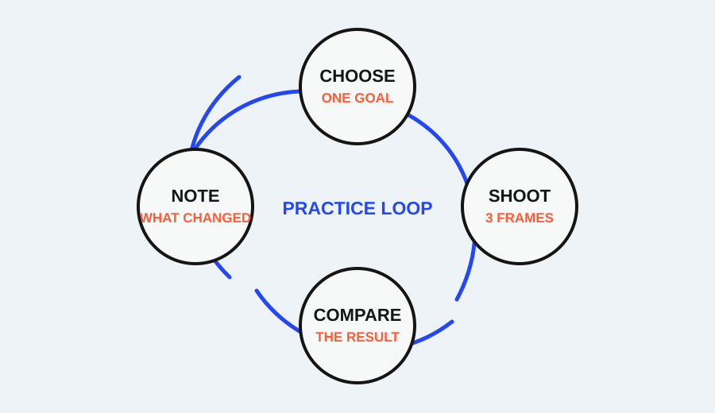

You do not need a studio, a new lens, or a collection of travel photos to practice light. One window, one small object, and a few minutes of repeated frames can reveal how direction, distance, softness, background, and exposure change a photograph.
These five exercises are designed as a small roundup, not as a promise that one setup will produce a particular “professional” look. Use the same subject where possible. Change one variable at a time. Keep a quick note of the window position, subject position, and camera position so the comparison remains meaningful.
1. Turn the subject toward the window
Setup: Place a mug, book, or person several feet from a window. Make one frame with the subject facing the window, one with the subject turned sideways, and one with the subject turned away from it. Keep the camera in roughly the same place.
Variable: Light direction across the subject.
Observe: Look at the shadow side, the brightest edge, and the shape of any texture. Front-facing light may make the subject look evenly lit. Side light can reveal form through a brighter side and a darker side. Backlight can create a bright outline or a darker front, depending on the exposure and the window.
If it fails: If the subject looks like a flat silhouette when you wanted detail, turn it slightly toward the window or change the exposure so the subject remains readable. If the background becomes distracting, change the camera angle rather than adding a new light.
The point is not to label one direction as best. It is to notice how the same subject changes when the light reaches it from a different side.
2. Change the subject’s distance from the window
Setup: Keep the camera and subject orientation consistent. Make one frame close to the window, one farther into the room, and one at a middle distance. Avoid moving the subject so far that the background or exposure becomes a completely different scene.
Variable: Distance from the window.
Observe: Compare brightness, contrast, and the transition from light to shadow. A subject closer to the window may receive stronger light and show more variation across its surface. Farther away, the light may appear less intense or less directional in the frame. The exact result depends on the window, time of day, and surrounding walls.
If it fails: If the three frames differ mainly because the camera changed position, return the camera to its mark and move only the subject. If the face or object becomes too bright near the window, expose for the important detail or move slightly back before changing the edit.
This exercise turns the vague idea of “good window light” into a comparison you can see. The window is the same; the subject-to-window relationship is not.
3. Add and remove diffusion
Setup: First photograph the subject with the window uncovered. Then place a thin, light-colored curtain or other safe translucent barrier between the window and the subject. Do not block ventilation or use anything that could fall onto a person or heater.
Variable: The apparent softness of the light source.
Observe: Look at the edges of shadows and the transition between highlight and midtone. Direct window light can produce more defined shadow boundaries. A curtain can spread the light and make the transition gentler. The effect depends on the material and the size of the window relative to the subject.
If it fails: If the curtain makes the whole scene too dark, move the subject closer to the window or adjust exposure while keeping the comparison honest. If the difference is hard to see, choose a subject with a curved surface or texture and increase the distance between the subject and the background so the shadow pattern is easier to inspect.
The goal is to observe a change in transition, not to chase a specific amount of blur or softness.
4. Move the background, not the subject
Setup: Keep the subject and camera position fixed. Place the background first close behind the subject, then move it farther away if the room allows. A plain wall, sheet, or large piece of card can work as a background.
Variable: Subject-to-background distance and background competition.
Observe: Notice whether the background becomes more or less prominent, and whether the light on it changes relative to the subject. A farther background may feel less connected to the subject and can become less distracting, especially when the aperture or phone depth effect also reduces detail. Composition guidance from Nikon emphasizes the role of framing, viewpoint, and surrounding space in what the viewer notices.
If it fails: If moving the background changes the subject’s light, move the background along the same plane or wait for a more stable light condition. If the frame still feels busy, simplify the composition by changing the camera angle or removing one competing object.
This exercise is about context. A background is not neutral; its distance and structure affect the subject’s visual priority.
5. Expose for three different priorities
Setup: Place the subject near the window so that one side is brighter than the other. Make three frames: one exposed to preserve the brightest window area, one exposed for the subject’s midtones, and one exposed to keep shadow detail readable. Use the exposure control available on your camera or phone.
Variable: Which tonal region receives priority.
Observe: In the highlight-priority frame, check whether the brightest area retains texture or shape. In the subject-priority frame, check whether the face or object is readable. In the shadow-priority frame, check whether dark areas remain distinguishable without making the bright window disappear.
If it fails: If the result looks identical, the scene may not have enough tonal difference or the device may be applying automatic processing. Choose a brighter window, a darker object, or a more contrasty time of day. If the subject is moving, stabilize the setup before comparing exposure.
Exposure is a decision about what must remain visible. Nikon’s exposure guidance places aperture, shutter speed, and ISO in a connected system, so a change in one control can affect brightness and appearance elsewhere.
How to record the results
For each exercise, save the frames together and write four notes:
- Window direction and approximate time.
- Subject position and background distance.
- The one variable you changed.
- The visible result and the next adjustment you would try.
Do not evaluate only on the phone’s thumbnail. Open the frames at the same size and inspect the edges, shadows, and subject detail. If a setting or menu is device-specific, record the name shown on your camera or app rather than translating it into a different brand’s terminology.
What to repeat next
After the five exercises, choose the result you most often wanted: clearer form, softer shadows, a quieter background, or better highlight detail. Repeat only that exercise with a different subject. A second round reveals which part of the result came from the window and which part came from the subject’s shape, color, and distance.
The purpose of a window-light practice session is not to produce five perfect photographs. It is to make five visible comparisons that let you predict what will change before you take the next frame.
Research sources
Sources
- 5 Easy Composition Guidelines — Nikon USA
- Photography for beginners: master the basics — Adobe
- Photographic guide for field researchers — UK Government
- A Basic Look at the Basics of Exposure — Nikon USA